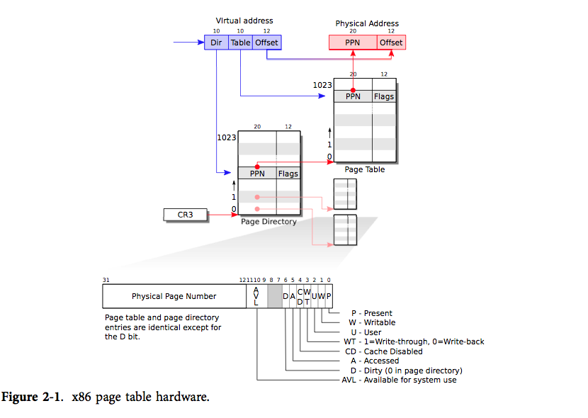
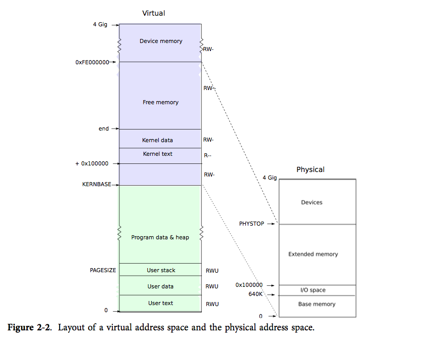
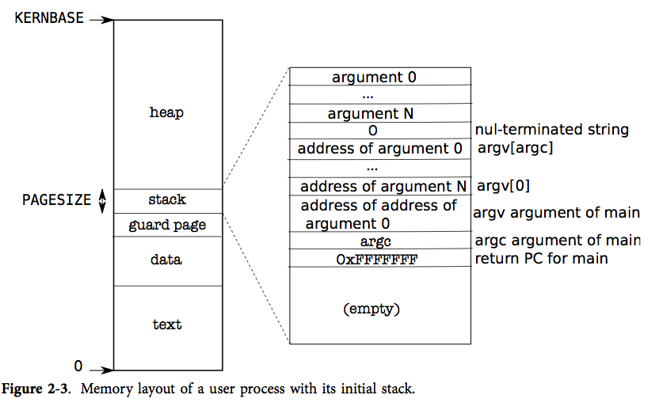

操作系统通过页表机制实现了对内存空间的控制。页表使得 xv6 能够让多不同处理器的多个地址空间映射到相同的物理内存上，还能够为不同的处理器的内存提供保护。 除此之外，我们还能够通过使用页表来间接地实现一些特殊功能。xv6 主要利用页表来区分多个地址空间，保护内存。另外，它也使用了一些简单的技巧，即把不同地址空间的多段内存映射到同一段物理内存（内核部分），在同一地址空间中多次映射同一段物理内存（用户部分的每一页都会映射到内核部分），以及通过一个没有映射的页保护用户栈。本章的其余部分将详细地探讨 x86 硬件提供的页表以及 xv6 对页表的使用。
回顾一下，x86 的指令（用户和内核均是如此）计算的都是虚拟地址。机器的 RAM，或者物理内存，则是用物理地址来作标记的。x86 的页表硬件通过映射机制将虚拟地址和物理地址联系起来。
一个 x86 页表就是一个包含2^20（1,048,576）条页表条目（PTE）的数组。每条 PTE 包含了一个20位的物理页号（PPN）及一些标志位。分页硬件要找到一个虚拟地址对应的 PTE，只需使用其高20位来找到该虚拟地址在页表中的索引，然后把其高20位替换为对应 PTE 的 PPN。而低12位是会被分页硬件原样复制的。因此在虚拟地址-物理地址的翻译机制下，页表可以为操作系统提供对一块块大小为4096（2^12）字节的内存片，这样的一个内存片就是一页。

如图2-1所示，实际上，地址的翻译有两个步骤。一个页表在物理内存中像一棵两层的树。树的根是一个4096字节的页目录，其中包含了1024个类似 PTE 的条目，但其实每个条目是指向一个页表页的引用。而每个页表页又是包含1024个32位 PTE 的数组。分页硬件使用虚拟地址的高10位来决定对应页目录条目。如果想要的条目已经放在了页目录中，分页硬件就会继续使用接下来的10位来从页表页中选择出对应的 PTE。否则，分页硬件就会抛出错误。通常情况下，大部分虚拟地址不会进行映射，而这样的二级结构就使得页目录可以忽略那些没有任何映射的页表页。
每个 PTE 都包含一些标志位，说明分页硬件对应的虚拟地址的使用权限。PTE_P 表示 PTE 是否陈列在页表中：如果不是，那么一个对该页的引用会引发错误（譬如：不允许被使用）。PTE_W 控制着能否对页执行写指令；如果不能，则只允许对其进行读指令和取指令。PTE_U 控制着用户程序能否使用该页；如果不能，则只有内核能够使用该页。图2-1对此进行了说明。这些的标志位和页表硬件相关的结构体都在 mmu.h（0200）定义。
下面对一些名词作出解释。物理内存是指 DRAM 中的储存单元。每个字节的物理内存都有一个地址，成为物理地址。而虚拟地址则是程序所使用的。分页硬件会将程序发出的虚拟地址翻译为物理地址，然后发送给 DRAM 硬件以读写存储器。这一层面的讨论中我们仅仅考虑虚拟地址，暂不考虑虚拟内存。
entry 中建立的页表已经产生了足够多的映射来让内核的 C 代码正常运行。但是 main 还是调用了 kvmalloc（1757） 立即转换到新的页表中，这是因为内核建立的页表更加精巧地映射了内存空间。

每个进程都有自己的页表，xv6 会在进程切换时通知分页硬件切换页表。如图表2-2所示，进程的用户内存从0开始，最多能够增长到 KERNBASE, 这使得一个进程最多只能使用 2GB 的内存。当进程向 xv6 要求更多的内存时，xv6 首先要找到空闲的物理页，然后把这些页对应的 PTE 加入该进程的页表中，并让 PTE 指向对应的物理页。xv6 设置了 PTE 中的 PTE_U 、PTE_W、PTE_P 标志位。大多数进程是用不完整个内存空间的；xv6 会把没有被使用的 PTE 的 PTE_P 标志位设为0。不同进程的页表将其用户内存映射到不同的物理内存中，因此每个进程就拥有了私有的用户内存。
xv6 在每个进程的页表中都包含了内核运行所需要的所有映射，而这些映射都出现在 KERNBASE 之上。它将虚拟地址 KERNBASE:KERNBASE+PHYSTOP 映射到 0:PHYSTOP。这样映射的原因之一是内核可以使用自己的指令和数据；原因之二是内存有时需要对物理页进行写操作，譬如在创建页表页的时候，而使得每一个物理页都在对应的虚拟地址上被映射就让这些操作变得很方便。这样的安排有一个缺点，即 xv6 无法使用超过 2GB 的物理内存。有一些使用内存映射的 I/O 设备的物理内存在 0xFE000000 之上，对于这些设备 xv6 页表采用了直接映射。KERNBASE 之上的页对应的 PTE 中，PTE_U 位均被置0，因而只有内核能够使用这些页。
每个进程的页表同时包括用户内存和内核内存的映射，这样当用户通过中断或者系统调用转入内核时就不需要进行页表的转换了。由于大部分内核都没有自己的页表，所以内核几乎都是在借用用户进程的页表。
现在来回顾一下，xv6 保证了每个进程只能使用其自己的内存，并且每个进程所看到的内存都是从虚拟地址0开始的一段连续内存。对于一个进程，xv6 只把该进程所使用的内存对应的 PTE 的 PTE_U 设为1，其他 PTE 则不然，这样就可以实现前者。对于后者，则是让页表把连续的虚拟页映射到实际分配的物理页。
main 调用 kvmalloc（1757），创建并切换到一个拥有内核运行所需的 KERNBASE 以上映射的页表。这里的大多数工作都是由 setupkvm（1737）完成的。首先，它会分配一页内存来放置页目录，然后调用 mappages 来建立内核需要的映射，这些映射可以在 kmap（1728）数组中找到。这里的映射包括内核的指令和数据，PHYSTOP 以下的物理内存，以及 I/O 设备所占的内存。setupkvm 不会建立任何用户内存的映射，这些映射稍后会建立。
mappages（1679）做的工作是在页表中建立一段虚拟内存到一段物理内存的映射。它使在页的级别，即一页一页地建立映射的。对于每一个待映射虚拟地址，mappages 调用 walkpgdir 来找到该地址对应的 PTE 地址。然后初始化该 PTE 以保存对应物理页号、许可级别（PTE_W 和/或 PTE_U）以及 PTE_P 位来标记该 PTE 是否是有效的（1691）。
walkpgdir（1654）模仿 x86 的分页硬件为一个虚拟地址寻找 PTE 的过程（见图表2-1）。walkpgdir 通过虚拟地址的前10位来找到在页目录中的对应条目（1659），如果该条目不存在，说明要找的页表页尚未分配；如果 alloc 参数被设置了，walkpgdir 会分配页表页并将其物理地址放到页目录中。最后用虚拟地址的后面10位来找到其在页表中的 PTE 地址（1672）。
在运行时，内核需要为页表、进程的用户内存、内核栈及管道缓冲区分配空闲的物理内存。
xv6 使用内核部分和 PHYSTOP 之间的物理内存为运行时分配提供内存资源。每次分配，它会将整块4096字节大小的页分配出去。xv6 还会通过维护一个物理页组成的链表来寻找空闲页。所以，分配内存需要将页移出该链表，而释放内存需要将页加入该链表。
这里我们遇到了一个自举的问题：为了让分配器能够初始化该空闲链表，所有的物理内存都必须要建立起映射，但是建立包含这些映射的页表又必须要分配存放页表的页。xv6 通过在 entry 中使用一个特别的页分配器来解决这个问题。该分配器会在内核数据部分的后面分配内存。该分配器不支持释放内存，并受限于 entrypgdir 中规定的 4MB 分配大小。即便如此，该分配器还是足够为内核的第一个页表分配出内存。
分配器中的数据结构是一个由可分配物理内存页构成的空闲链表。这个空闲页的链表的元素是结构体 struct run（2764）。那么存放这些数据结构的内存在哪个呢？实际上分配器将每个空闲页的 run 结构体保存在该空闲页本身里面，否则就无处可放了。分配器还用一个 spin lock（2764-2766）来保护空闲链表。链表和这个锁都包装在一个结构体中，这样逻辑就比较明晰：锁保护了该结构体中的域。不过现在让我们先忽略这个锁，以及对 acquire 和 release 的调用；我们会在第4章了解其细节。
main 函数调用了 kinit1 和 kinit2 两个函数对分配器进行初始化（2780）。这样做是由于 main 中的大部分代码都不能使用锁以及 4mb 以上的内存。kinit1 在前 4mb 进行了不需要锁的内存分配。而 kinit2 允许了锁的使用并分配了更多内存。原本应该由 main 决定有多少物理内存可用于分配，但在 x86 上很难实现。所以它假设机器中有 240mb（PHYSTOP），并将内核部分和 PHYSTOP 之间的内存都作为一个初始的空闲内存池。kinit1 和 kinit2 调用 freerange 将内存加入空闲链表中，freerange 则是通过对每一页调用 kfree 实现该功能。一个 PTE 只能指向一个4096字节对齐的物理地址（即是4096的倍数），因此 freerange 用 PGROUNDUP 来保证分配器只会释放对齐的物理地址。分配器原本一开始没有内存可用，正是上面讲到的对 kfree 的调用给了分配器可管理使用的内存。
分配器会通过高地址的虚拟地址找到它们映射的物理页，而非通过其物理地址。所以 kinit 会使用 p2v(PHYSTOP)来将 PHYSTOP（一个物理地址）翻译为虚拟地址。分配器有时将地址看作是整型，这是为了对其进行运算（譬如在 kinit 中遍历所有页）；而有时将地址看作读写内存用的指针（譬如操作每个页中的 run 结构体）；对地址的双重使用导致分配器代码中充满了类型转换。另外一个原因是，释放和分配内存隐性地改变了内存的类型。
函数 kfree（2815）首先将被释放内存的每一位设为1。这使得访问已被释放内存的代码所读到的不是原有数据，而是垃圾数据；这样做使得我们能在运行时更早地让这种错误代码发生崩溃。接下来 kfree 把 v 转换为一个指向结构体 struct run 的指针，在 r->next 中保存原有空闲链表的表头，然后将当前的空闲链表设置为 r。kalloc 移除并返回空闲链表的表头。

图表2-3展示了在 xv6 中，一个运行中进程的用户内存结构。堆在栈之上，所以它可以增长（通过 sbrk）。栈占用了单独的一页内存，在 exec 建立的初始内容中可以看到。栈的最上方放着字符串形式的命令行参数以及指向这些参数的指针数组，其下方放的值使得一个程序可以从 main 开始，仿佛刚刚调用了函数 main(argc, argv)。为了防止栈使用了它不应该使用的页，栈的下方有一个保护页。保护页没有映射，因此当栈的使用进入到该页时，就会产生异常，无法翻译这个错误的地址。
execexec 是创建地址空间中用户部分的系统调用。它根据文件系统中保存的某个文件来初始化用户部分。exec（5910）通过 namei（5920）打开二进制文件，这一点将在第6章进行解释。然后，它读取 ELF 头。xv6 的应用程序用广泛使用的 ELF 格式来描述，该格式在 elf.h 中定义。一个 ELF 二进制文件包括了一个 ELF 头，即结构体 struct elfhdr（0955），然后是连续几个程序段的头，即结构体 struct proghdr（0974）。每个 proghdr 都描述了需要载入到内存中的程序段。xv6 中的程序只有一个程序段的头，但其他操作系统中可能有多个。
exec 第一步是检查文件是否包含 ELF 二进制代码。一个 ELF 二进制文件是以4个“魔法数字”开头的，即0x7F，“E”，“L”，“F”，或者写为宏 ELF_MAGIC（0952）。如果 ELF 头中包含正确的魔法数字，exec 就会认为该二进制文件的结构是正确的。
exec 通过 setupkvm（5931）分配了一个没有用户部分映射的页表，再通过 allocuvm（5943）为每个 ELF 段分配内存，然后通过 loaduvm（5945）把段的内容载入内存中。allocuvm 会检查请求分配的虚拟地址是否是在 KERNBASE 之下。 loaduvm（1818） 通过 walkpgdir 来找到写入 ELF 段的内存的物理地址；通过 readi 来将段的内容从文件中读出。
exec 创建的第一个用户程序 /init 程序段的头是这样的：
#objdump -p _init
_init: file format elf32-i386
Program Header:
LOAD off 0x00000054 vaddr 0x00000000 paddr 0x00000000 align 2**2
filesz 0x000008c0 memsz 0x000008cc flags
程序段头中的 filesz 可能比 memsz 小，这表示中间相差的地方应该用0填充（对于 C 的全局变量）而不是继续从文件中读数据。对于 /init，filesz 是2240字节而 memsz 是2252字节。所以 allocuvm 会分配足够的内存来装2252字节的内容，但只从文件 /init 中读取2240字节的内容。
现在 exec 要分配以及初始化用户栈了。它只为栈分配一页内存。exec 一次性把参数字符串拷贝到栈顶，然后把指向它们的指针保存在 ustack 中。它还会在参数列表的最后放一个空指针。这样，ustack 中的前三条条目就是伪造的返回 PC，argc 和 argv 指针了。
exec 会在栈的页下方放一个无法进入的页，这样当程序尝试使用超过一个页的栈时就会报错。另外，这个无法进入的页也让 exec 能够处理那些过于庞大的参数；当参数过于庞大时，exec 用于将参数拷贝到栈上的函数 copyout 会发现目标页无法进入，并且返回-1。
在建立新的用户内存时，如果 exec 发现了错误，比如一个无效的程序段，它就会跳转到标记 bad 处，释放这段内存映像，然后返回-1。exec 必须在确认系统调用成功能够成功后才能释放原来的内存映像，否则若原来的内存映像已经被释放了，exec 甚至都无法向它返回-1了。exec 中的错误只可能发生在建立新的内存映像时。一旦新的内存映像建立完成，exec 就能装载新映像（5989）而把旧映像释放（5990）。最后，exec 成功地返回0。
和大多数操作系统一样，xv6 使用分页硬件来保护内存，做内存映射。但是很多操作系统的实现更加精巧；例如，xv6 不能向磁盘中请求页，不能实现 copy-on-write 的 fork 操作，不能实现共享内存，不能实现 lazily-allocated 页，不能自动扩展栈。x86 支持使用段式内存（见附录B），但通常仅仅在实现有着固定地址但在不同 CPU 上有不同值的 per-CPU 变量（见 seginit），譬如 proc 时才用到。对于不支持段式内存的体系结构而言，想要实现这种 per-CPU（或 per-thread）的变量，就必须要额外用一个寄存器来保存指向 per-CPU 数据区的指针。由于 x86 的寄存器是在太少，所以实现对段式内存的支持所付出的代价也是值得的。
在内存较多的机器上使用 x86 的 4MB 大小的“超级页”还是很划算的，能够减少页表的工作负担。而内存较小时，就比较适合用比较小的页，这样使得分配和向磁盘输出页时都拥有较好的粒度大小。譬如，当一个程序只需 8KB 的内存时，分配 4MB 的页就太浪费了。xv6 在初始页表（1311）中使用了“超级页”。数组的初始化设置了1024条 PDE 中的2条，即0号和960号（KERBASE >> PDXSHIFT），而其他的 PDE 均为0。xv6 设置了这两条中的 PTE_PS 位，标记它们为“超级页”。内核还通过设置 %cr4 中的 CP_PSE（Page Size Extension） 位来通知分页硬件允许使用超级页。
xv6 本来应该决定实际 RAM 的配置，而不是假设有 240MB 内存。在 x86 上，至少有三个通用算法：第一种是探寻物理地址空间，寻找像内存一样能够维持被写入数据的区域；第二种是从 PC 中的非易失性 RAM 的某16位中读取内存有多少个KB；第三种是在 BIOS 中查看作为多处理器表一部分的内存结构表。读取内存结构表是一项比较复杂的工作。
内存分配曾经是一个热门话题，其主要问题就是如何对优先内存进行高效使用以及如何为可能的内存请求做好准备；相关资料请搜索 Knuth 。今天人们更加关心速度，而非空间的使用效率。另外，精巧的内核往往会分配不同大小的内存块，而不是像 xv6 一样固定分配4096字节；实际使用的内存分配器必须做到，对小块内存和大块内存的分配请求都能很好地处理。
查看一下真实的操作系统的内存大小。
如果 xv6 没有使用超级页，我们应该如何声明 entrypgdir？
Unix 在 exec 的实现中考虑了对 shell 脚本的特殊处理。执行一个以文本 #! 开头的文件时，第一行内容会被系统理解为执行该文件的翻译器。例如，如果用 exec 执行 myprog arg1，而 myprog 的第一行又是 #!interp，那么 exec 会运行命令 /interp myprog arg1。如何 xv6 中实现该功能？